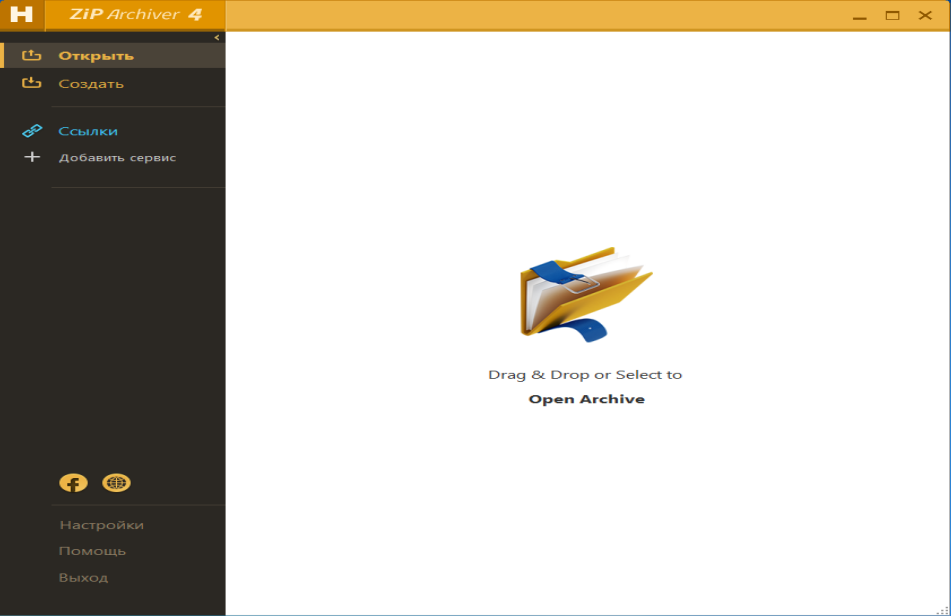
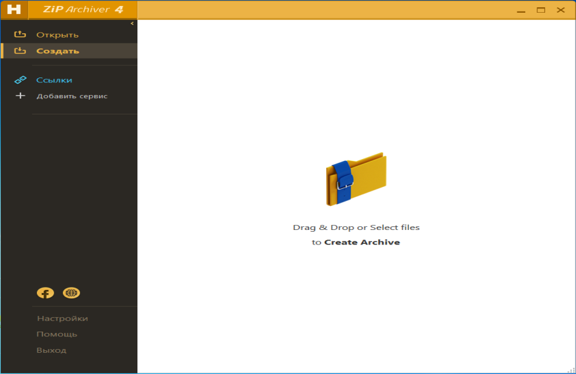
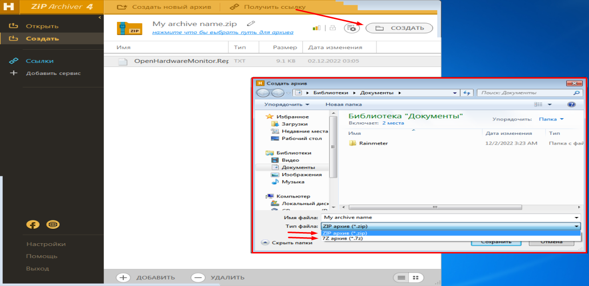
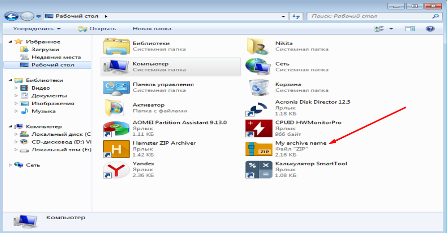
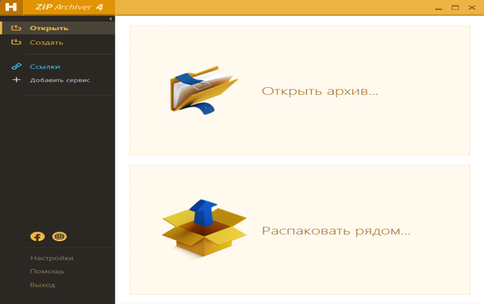
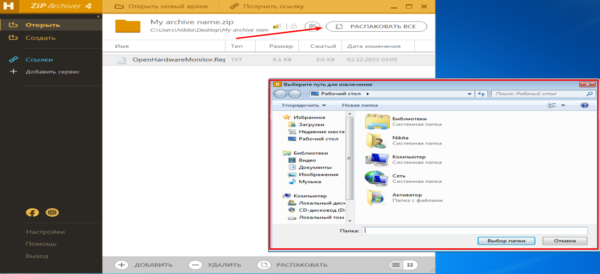

Hamster Free ZIP Archiver – это инструмент для архивирования и сжатия файлов, разработанный фирмой Hamster Soft. Данное приложение позволяет уменьшить размер любого файла, сжав его в файл меньшего размера. Также, поддерживается извлечение файлов из zip-архивов.
Инсталляция не представляет собой ничего сложного – скачайте программу и запустите установщик. Следуйте простым инструкциям и дождитесь завершения процесса.
Программа имеет очень простой интерфейс, позволяющий архивировать и разархивировать файлы, просто перетаскивая их в окно. В параметрах вы можете изменить степень сжатия и на какое количество пакетов следует разбить архив. По умолчанию создаётся всего один архивный файл.
После установки приложения мы увидим следующее окно:

Рисунок 5.3.1 – главное окно приложения Hamster ZIP Archiver.
Слева можно увидеть панель, на которой представлен основной функционал в виде вкладок «Открыть» и «Создать».
Вкладка «Ссылки» позволяет использовать дополнительные подключаемые сервисы, такие как Yandex Disk, Dropbox, Google Drive и другие, что позволяет напрямую работать с файлами в облачных сервисах, а также помещать сами файлы туда. Данная возможность реализуется при помощи вкладки «Добавить сервис».
Ниже также можно увидеть вкладки «Настройки», «Помощь» и соответственно «Выход». В настройках нет никаких скрытых важных настроек, поэтому необходимости разъяснять функционал нет.
Рассмотрим основной функционал. Откроем вкладку «Создать».

Рисунок 5.3.2 – вид вкладки «Создать».
Сразу же можно увидеть подсказку от разработчиков, что имеется возможность воспользоваться функцией Drag & Drop (на русском «Перетащи и брось») или же выбрать файлы, нажав на окно. После добавления файла можно будет увидеть следующее окно:

Рисунок 5.3.3 – вид экрана после выбора файла.
Далее после нажатия кнопки «Создать», появится окно, где просят указать название файла, его расположение, а также формат. Отмечу, что форматов всего лишь 2 – .zip и .7z, в то время как в других приложениях их было большое множество. Возможность разделения файла на тома, размер словаря, размера слова, а также степени сжатия скрыта в параметрах. После этого будет создан архив с заданным расширением и именем. В результате архивации файл был сжат в 4 раза.

Рисунок 5.3.4 – созданный архив.
Рассмотрим обратную функцию – разархивацию. Сразу же имеется подсказка, что можно выбрать архив или воспользоваться функцией Drag & Drop. Также если начать перетаскивать и задержать файл в таком положении, то появится подсказка, что можно открыть архив или распаковать рядом, в том же месте, где и находится сам архив.

Рисунок 5.3.5 – окно приложения при перетаскивании файла.
Перетащим файл в область открытия архива.
После этого в окне откроется наш архив, а затем после нажатия на кнопку «Распаковать всё» появится окно, где попросят указать место распаковки и название файла.

Рисунок 5.3.6 – окно распаковки файла.
В результате будет создана папка с заданным именем, в которой будет содержаться изначальный файл.
В заключении, отмечу, что приложение крайне просто, чем предыдущие 2, оно подойдёт совсем неопытному пользователю, и проблем, чтобы разобраться с ним, у него точно не возникнет.